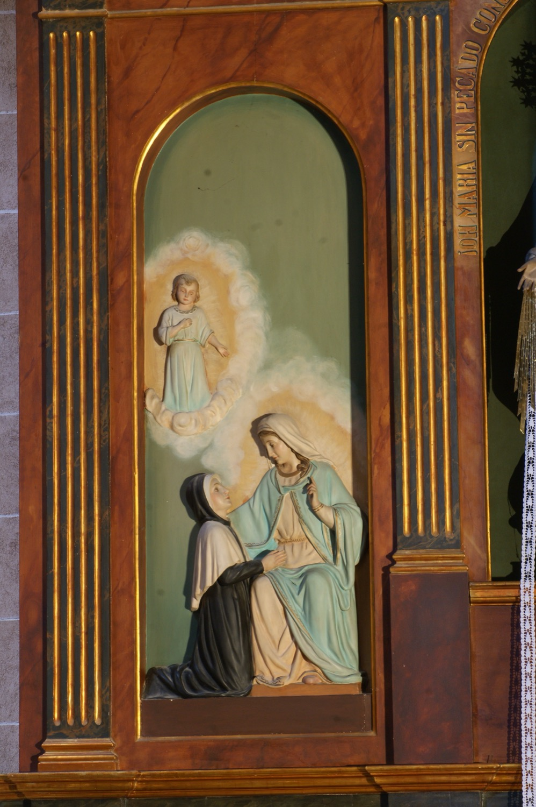

Santa Catalina Labouré (1806-1876) va ser una Filla de la Caritat de sant Vicent de Paül a qui la Verge Maria es va aparèixer en diverses ocasions. En una d’elles li encarregà la confecció d’unes medalles basades en la manera com se li havia presentat en aquella visió. Catalina ho explicà al seu confessor. Després de dos anys observant la vida de la religiosa, aquest ho comunicà al bisbe sense revelar la identitat de Catalina, i el bisbe n’aprovà l’emissió: és la coneguda com la “Medalla Miraculosa”. Santa Catalina visqué la resta de la seva vida en l’anonimat i ningú, fora del seu confessor, no conegué les seves visions ni que era la responsable de la Medalla Miraculosa fins que, uns mesos abans de morir, ho explicà a la seva superiora.
Aquest relleu, obra, com la resta de l’altar, de Guillem Mas (s. XX), descriu la primera aparició de la Verge a santa Catalina Labouré. La nit del 18 de juliol de 1830, vigília de la festivitat de sant Vicent de Paül, la despertà un nin que li demanà que el seguís fins a la capella del convent. Allà la rebé la Verge Maria asseguda en una butaca. La religiosa s’agenollà als seus peus i recolzà les mans en pregària damunt els seus genolls. En aquella ocasió la Verge li donà diversos consells espirituals i li anuncià que més endavant Déu li encarregaria una missió, que resultaria ser la confecció de la medalla.